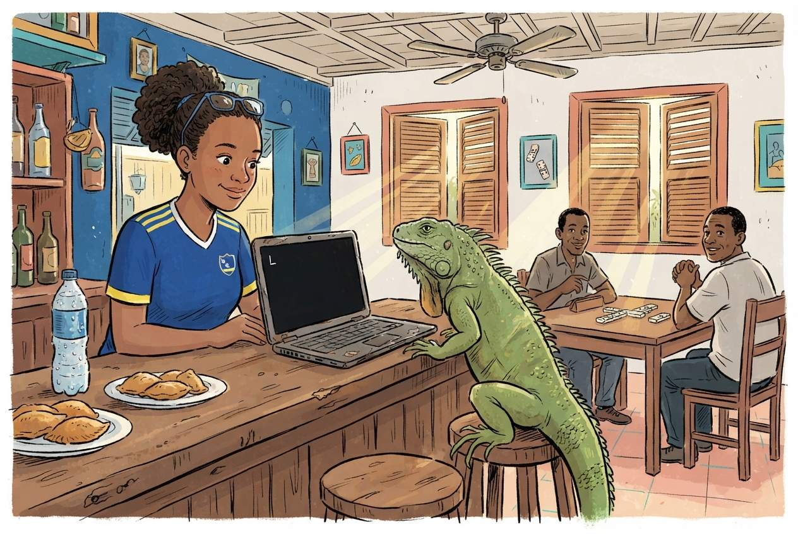

Your First R Session
Last updated on 2026-09-09 | Edit this page
Estimated time: 65 minutes
Overview
Questions
- How does RStudio compare to the SPSS interface?
- How do I import data, including SPSS
.savfiles? - How do I get descriptive statistics and frequency tables in R?
Objectives
- Navigate the RStudio interface and identify the equivalent of SPSS panels
- Import CSV, Excel, and SPSS
.savfiles into R - Run basic descriptive statistics and frequency tables
- Inspect variables and data structure

RStudio orientation
When you open RStudio for the first time, you see four panes. If you have used SPSS before, each one has a rough equivalent:
| RStudio pane | Location | SPSS equivalent | What it does |
|---|---|---|---|
| Source Editor | Top-left | Syntax Editor | Where you write and save your code (scripts) |
| Console | Bottom-left | Output Viewer | Where R runs commands and prints results |
| Environment | Top-right | Data View header | Lists all objects (datasets, values) currently in memory |
| Files / Plots / Help | Bottom-right | (no equivalent) | File browser, plot preview, and built-in documentation |
The key difference from SPSS: in SPSS you usually have one dataset open at a time and interact through menus. In RStudio you write instructions in the Source Editor (top-left), send them to the Console (bottom-left), and the results appear either in the Console or the Plots pane.
The Source Editor is your new best friend
In SPSS many users never open the Syntax Editor and click menus instead. In R the Source Editor is how you work. Think of it as a recipe: you write the steps once, and you or anyone else can re-run them at any time.
Save your scripts with the .R extension. Three reasons
you will thank yourself later. RStudio recognises .R files
and turns on syntax highlighting, error checking, and the Run button.
Version control systems like Git track changes line by line in
.R files but treat other formats as opaque blobs. And when
a colleague opens the file in six months, the extension tells them
immediately that this is R code, not a Word document or a loose text
file. The extension is small. The habit pays for itself the first time
you come back to your own work.
Objects and assignment
In SPSS, when you compute a new variable it appears as a column in your dataset. In R everything you create is stored as a named object.
You create objects with the assignment operator
<-, a less-than sign followed by a hyphen. Read it as
“gets” or “is assigned”.
R
# Store a number
population <- 148925
# Store text (called a "character string" in R)
island <- "Curaçao"
# Store the result of a calculation
density <- population / 444 # Curaçao is about 444 km²
To see the value of an object, type its name and run it:
R
population
OUTPUT
[1] 148925R
island
OUTPUT
[1] "Curaçao"R
density
OUTPUT
[1] 335.4167Why <- and not
=?
You will see some people use = for assignment, and it
works in most cases. The R community convention is <-.
It makes your code easier to read because = is also used
inside function arguments, as you will see shortly.
In RStudio the keyboard shortcut Alt + - (Alt and
the minus key) types <- for you automatically.
Functions: R’s version of menu clicks
In SPSS you click Analyze > Descriptive Statistics > Descriptives and a dialog box appears. In R you call a function instead. A function has a name, and you pass it arguments inside parentheses.
R
# round() is a function. The number is the input, digits = 1 is an option.
round(335.417, digits = 1)
OUTPUT
[1] 335.4R
# sqrt() calculates a square root
sqrt(density)
OUTPUT
[1] 18.31438The pattern is always
function_name(argument1, argument2, ...). This is the R
equivalent of filling in an SPSS dialog box: the function name is the
menu item, and the arguments are the fields you would fill in.
Packages: extending R
R comes with many built-in functions, but its real power comes from packages, add-on libraries written by other users. Think of them as SPSS modules, except they are free.
There are two steps:
- Install the package (once per computer, like installing an app):
R
install.packages("tidyverse")
- Load the package (once per session, like opening an app):
R
library(tidyverse)
OUTPUT
── Attaching core tidyverse packages ──────────────────────── tidyverse 2.0.0 ──
✔ dplyr 1.2.1 ✔ readr 2.2.0
✔ forcats 1.0.1 ✔ stringr 1.6.0
✔ ggplot2 4.0.3 ✔ tibble 3.3.1
✔ lubridate 1.9.5 ✔ tidyr 1.3.2
✔ purrr 1.2.2
── Conflicts ────────────────────────────────────────── tidyverse_conflicts() ──
✖ dplyr::filter() masks stats::filter()
✖ dplyr::lag() masks stats::lag()
ℹ Use the conflicted package (<http://conflicted.r-lib.org/>) to force all conflicts to become errors
install.packages() vs
library()
A common source of confusion for beginners:
-
install.packages("tidyverse")downloads and installs the package. You only need to do this once, or when you want to update. Note the quotation marks. -
library(tidyverse)loads a package that is already installed so you can use it in your current session. You do this every time you start R. No quotation marks needed, though they work too.
Analogy: install.packages() is buying a book and putting
it on your shelf. library() is taking the book off the
shelf and opening it.
Importing data
Before you import, set up your workshop folder
R can read a file from the internet, and we saw that in Episode 1. In daily work you will more often read from a file that already lives on your computer, on a shared drive, in a project folder, next to your script. We will do that here.
Three short steps, and then every read_csv() line in the
rest of the course will just work.
1. Download the course datasets. Later in this episode we compare loading the same data from a CSV, an Excel file, and an SPSS file. Download all three now. Open each link in your browser and click the Download raw file button near the top right of the preview:
- blue_wave_squad.csv the plain-text version, one flat table
-
blue_wave_squad.xlsx
the Excel version, with two sheets,
curacaoandaruba - blue_wave_squad.sav the SPSS version, so you can prove to yourself that R opens your existing files
Do not open the CSV in Excel and re-save. That can silently change the encoding and it will mangle the ç in Curaçao. Just save the files as they are.
2. Create an RStudio project. In RStudio go to
File → New Project → New Directory → New Project. Name
the directory blue-wave and save it somewhere you can find
again. Your Documents folder or Desktop is fine. RStudio will open a
fresh session with this folder as its working directory.
3. Put the files where R expects to find them.
Inside your blue-wave project folder, create a subfolder
called data, lower case, no spaces. Move the three
downloaded files into it. Your structure should look like this:
blue-wave/
├── blue-wave.Rproj
└── data/
├── blue_wave_squad.csv
├── blue_wave_squad.xlsx
└── blue_wave_squad.savIn RStudio’s Files pane, bottom-right, click into the
data folder. If you see blue_wave_squad.csv,
you are ready. Green sticky note.
Why a project folder?
A project folder answers the single most common beginner error in R:
“R cannot find my file.” The file path
"data/blue_wave_squad.csv" is read relative to R’s current
working directory. When you open a project, RStudio automatically sets
the working directory to the project folder, so the path works. Without
a project, R’s working directory could be anywhere, usually somewhere
unhelpful like your Documents folder, and the file is not found.
Projects also keep scripts, data, and outputs organised in one place you can hand to a colleague or archive at the end of a study.
What is in the data
The dataset is the player-level squad list for four Dutch Caribbean national teams: Curaçao men and women, Aruba men and women. One row is one player, 94 in total. It was scraped from the current-squad tables on Wikipedia, which means it has the gaps and inconsistencies real data has. That is deliberate. Clean textbook data teaches you nothing about the afternoon you will actually spend with your own file.
| Variable | What it holds |
|---|---|
team_code |
CUW-M, CUW-W, ARU-M,
ARU-W
|
player_name |
Player name |
position |
GK, DEF, MID,
FWD
|
club |
Club name, or unknown
|
club_country |
ISO 3-letter country code of the club, X where it could
not be established |
Five columns is all you get. Everything else this course does with the data, which island, which gender, whether a player is based abroad, which part of the world they play in, you will build yourself out of these five. That is the job.
CSV files with read_csv()
The most common data format in R is CSV, comma-separated values. The
readr package, loaded as part of tidyverse,
provides read_csv():
R
squad <- read_csv("data/blue_wave_squad.csv")
OUTPUT
Rows: 94 Columns: 5
── Column specification ────────────────────────────────────────────────────────
Delimiter: ","
chr (5): team_code, player_name, position, club, club_country
ℹ Use `spec()` to retrieve the full column specification for this data.
ℹ Specify the column types or set `show_col_types = FALSE` to quiet this message.R prints a summary of the column types it detected. This is equivalent to opening a CSV in SPSS via File > Open > Data and checking the variable types.
SPSS .sav files with haven
If you have existing SPSS datasets, the haven package
reads them directly, including variable labels and value labels:
R
# install.packages("haven") # run once if needed
library(haven)
squad_spss <- read_sav("data/blue_wave_squad.sav")
head(squad_spss)
OUTPUT
# A tibble: 6 × 5
team_code player_name position club club_country
<chr> <chr> <chr> <chr> <chr>
1 ARU-M Bradley Martis DEF IJsselmeervogels NLD
2 ARU-M Darryl Bäly DEF Lisse NLD
3 ARU-M Diederick Luydens DEF Dakota ABW
4 ARU-M Gladwin Curiel DEF FC Prishtina XKX
5 ARU-M Kymani Nedd DEF VV Zwaluwen NLD
6 ARU-M Nickenson Paul DEF Dakota ABW Look at that output. It is the same data, and nothing was converted or exported to get it there. R reads your existing SPSS files as they are.
Excel files with readxl
Many datasets arrive as Excel files, .xlsx or
.xls, especially from government agencies and international
organisations. In SPSS you would import these through File >
Open > Data and select the Excel file type from the
dropdown. In R the readxl package handles this.
R
# Iteration: 1
# Install once if needed
install.packages("readxl")
R
# Iteration: 1
library(readxl)
# Basic import, reads the first sheet by default
squad_xl <- read_excel("data/blue_wave_squad.xlsx")
If your Excel file has multiple sheets, use the sheet
argument to specify which one you want, either by name or by
position:
R
# Iteration: 1
# By sheet name
curacao <- read_excel("data/blue_wave_squad.xlsx", sheet = "curacao")
# By position (second sheet)
aruba <- read_excel("data/blue_wave_squad.xlsx", sheet = 2)
You can also read a specific cell range with the range
argument, which is useful when the data does not start at cell A1:
R
# Iteration: 1
# Read only cells B2 through F50
subset <- read_excel("data/blue_wave_squad.xlsx", range = "B2:F50")
read_excel() vs
read_csv(), when to use which
If you have a choice, CSV is simpler: plain text, lightweight, and
free of formatting surprises. Use read_excel() when you
receive data in Excel format and do not want to export it to CSV by hand
first, or when the file contains multiple sheets you need to reach
programmatically.
Unlike read_csv(), read_excel() is not part
of the tidyverse. You need to install and load readxl
separately.
Challenge: Import from Excel
The Excel file has two sheets, curacao and
aruba.
- Write the code to load the
readxlpackage. - Write the code to read the
arubasheet into an object calledaruba_squad. - How would you check how many rows and columns
aruba_squadhas?
R
# Iteration: 1
# 1: Load the package
library(readxl)
# 2: Read the aruba sheet
aruba_squad <- read_excel("data/blue_wave_squad.xlsx", sheet = "aruba")
# 3: Check dimensions
dim(aruba_squad)
OUTPUT
[1] 46 5R
# Or: glimpse(aruba_squad)
Exploring your data
Now that we have the squad dataset loaded, let us
explore it. Each of the functions below is the R equivalent of something
you would do in SPSS.
View(), the Data View equivalent
R
View(squad)
This opens a spreadsheet-like viewer in RStudio, just like SPSS Data View. You can scroll, sort columns by clicking headers, and filter. Note the capital V.
head(), see the first few rows
R
head(squad)
OUTPUT
# A tibble: 6 × 5
team_code player_name position club club_country
<chr> <chr> <chr> <chr> <chr>
1 ARU-M Bradley Martis DEF IJsselmeervogels NLD
2 ARU-M Darryl Bäly DEF Lisse NLD
3 ARU-M Diederick Luydens DEF Dakota ABW
4 ARU-M Gladwin Curiel DEF FC Prishtina XKX
5 ARU-M Kymani Nedd DEF VV Zwaluwen NLD
6 ARU-M Nickenson Paul DEF Dakota ABW This is faster than View() when you just want a quick
look. By default it shows 6 rows. You can change that with
head(squad, n = 10).
str(), the Variable View equivalent
In SPSS you would switch to Variable View to see
variable names, types, and labels. In R, str() does the
same thing:
R
str(squad)
OUTPUT
spc_tbl_ [94 × 5] (S3: spec_tbl_df/tbl_df/tbl/data.frame)
$ team_code : chr [1:94] "ARU-M" "ARU-M" "ARU-M" "ARU-M" ...
$ player_name : chr [1:94] "Bradley Martis" "Darryl Bäly" "Diederick Luydens" "Gladwin Curiel" ...
$ position : chr [1:94] "DEF" "DEF" "DEF" "DEF" ...
$ club : chr [1:94] "IJsselmeervogels" "Lisse" "Dakota" "FC Prishtina" ...
$ club_country: chr [1:94] "NLD" "NLD" "ABW" "XKX" ...
- attr(*, "spec")=
.. cols(
.. team_code = col_character(),
.. player_name = col_character(),
.. position = col_character(),
.. club = col_character(),
.. club_country = col_character()
.. )
- attr(*, "problems")=<pointer: 0x5595ccadafc0> This tells you how many observations (rows), how many variables
(columns), and the type of each variable: num for numbers,
chr for text.
glimpse(), a tidyverse alternative to
str()
The glimpse() function from dplyr gives
similar information in a tidier format:
R
glimpse(squad)
OUTPUT
Rows: 94
Columns: 5
$ team_code <chr> "ARU-M", "ARU-M", "ARU-M", "ARU-M", "ARU-M", "ARU-M", "AR…
$ player_name <chr> "Bradley Martis", "Darryl Bäly", "Diederick Luydens", "Gl…
$ position <chr> "DEF", "DEF", "DEF", "DEF", "DEF", "DEF", "DEF", "DEF", "…
$ club <chr> "IJsselmeervogels", "Lisse", "Dakota", "FC Prishtina", "V…
$ club_country <chr> "NLD", "NLD", "ABW", "XKX", "NLD", "ABW", "NLD", "NLD", "…
summary(), Descriptives in one command
In SPSS: Analyze > Descriptive Statistics > Descriptives. In R:
R
summary(squad)
OUTPUT
team_code player_name position club club_country
Length :94 Length :94 Length :94 Length :94 Length :94
N.unique : 4 N.unique :94 N.unique : 4 N.unique :71 N.unique :15
N.blank : 0 N.blank : 0 N.blank : 0 N.blank : 0 N.blank : 0
Min.nchar: 5 Min.nchar: 9 Min.nchar: 2 Min.nchar: 3 Min.nchar: 1
Max.nchar: 5 Max.nchar:25 Max.nchar: 3 Max.nchar:31 Max.nchar: 3 For numeric columns you get the minimum, maximum, mean, median, and quartiles. For character columns you get the length and type. Most of this dataset is character, which is normal for squad and survey data, and it is why frequency tables matter more here than means.
table(), frequency tables
In SPSS: Analyze > Descriptive Statistics > Frequencies. In R:
R
table(squad$team_code)
OUTPUT
ARU-M ARU-W CUW-M CUW-W
23 23 26 22 The $ operator extracts a single column from a data
frame. So squad$team_code means “the team_code column from
the squad dataset”, like clicking on a single variable in SPSS.
R
table(squad$position)
OUTPUT
DEF FWD GK MID
30 25 11 28 You can also make two-way frequency tables, which is where this dataset starts to become interesting:
R
table(squad$team_code, squad$club_country)
OUTPUT
ABW BEL CHE CUW DEU GBR GRC ISR MYS NLD SAU TUR USA X XKX
ARU-M 3 0 0 0 1 0 0 0 0 18 0 0 0 0 1
ARU-W 6 0 0 0 0 0 1 0 0 14 0 0 0 2 0
CUW-M 0 1 1 0 0 4 2 1 1 10 1 3 2 0 0
CUW-W 0 0 0 7 1 0 1 0 0 12 0 0 1 0 0Read that table across the rows. CUW-M and
ARU-M are two men’s squads from neighbouring islands. One
is spread thinly across a lot of columns; the other piles up in one.
Hold onto that. Episode 3 is where you learn to interrogate it
properly.
- Spend time on the RStudio pane orientation. Have participants identify each pane on their own screen before moving on.
- The
<-assignment operator trips people up. Give them a few minutes to practice creating objects with different names and values. - When loading tidyverse, the startup messages can be alarming to beginners. Reassure them that the “Attaching packages” and “Conflicts” messages are normal and expected.
- Do the “Before you import” subsection as a
whole-room moment, not as reading. Project the download page, walk
everyone through the browser download, the New Project dialog, and
creating the
datasubfolder. Wait for green sticky notes in the Files pane before typingread_csv(). This is the most common point of failure in the course and it is worth five deliberate minutes up front to avoid twenty scattered minutes of troubleshooting later. - The
.savimport is worth a beat of theatre. Most of the room has years of.savfiles they assume are trapped. Let them see one open in three lines. - Encoding warning is not pedantry. If a participant opens the CSV in Excel and saves it, the ç in Curaçao usually breaks and they will hit an error later that looks unrelated. Say it once, firmly.
- If a participant cannot download (blocked network, locked laptop), have a USB stick or shared-drive copy of the three files ready as fallback.
- The two-way table at the end is a deliberate cliffhanger. Do not explain it. Let someone in the room say it out loud.
Challenge 1: Explore the squad dataset
Import the squad dataset and answer the following using R functions. Write your code in the Source Editor and run each line.
- How many rows and how many columns does the dataset have?
- What data type is the
club_countrycolumn? Does that surprise you? - How many players are in each of the four squads?
- How many players have a club that could not be established?
R
# Load the data (if not already loaded)
library(tidyverse)
squad <- read_csv("data/blue_wave_squad.csv")
OUTPUT
Rows: 94 Columns: 5
── Column specification ────────────────────────────────────────────────────────
Delimiter: ","
chr (5): team_code, player_name, position, club, club_country
ℹ Use `spec()` to retrieve the full column specification for this data.
ℹ Specify the column types or set `show_col_types = FALSE` to quiet this message.Question 1: How many rows and columns?
R
dim(squad)
OUTPUT
[1] 94 594 players and 5 columns.
Question 2: Data type of
club_country?
R
str(squad$club_country)
OUTPUT
chr [1:94] "NLD" "NLD" "ABW" "XKX" "NLD" "ABW" "NLD" "NLD" "NLD" "NLD" ...It is character (chr). Most values are three-letter
country codes, but the column also holds X for the players
whose club nobody could establish. R will not invent a type that fits
only some of the values, and it will not quietly drop the ones that do
not fit. That is the behaviour you want.
Question 3: Players per squad?
R
table(squad$team_code)
OUTPUT
ARU-M ARU-W CUW-M CUW-W
23 23 26 22 Question 4: Players with no established club?
R
sum(squad$club_country == "X")
OUTPUT
[1] 2Two, both in the Aruba women’s squad. Remember them. They come back in Episode 3.
Challenge 2: Practice with objects and functions
- Create an object called
my_islandthat stores the text"Curaçao". - Create an object called
area_km2that stores the value444. - Use the
nchar()function to count the number of characters inmy_island. - Use
nrow()insideround()to work out what percentage of all 94 players are in the Curaçao men’s squad. Hint: you can put one function inside another.
R
# 1 and 2: Create objects
my_island <- "Curaçao"
area_km2 <- 444
# 3: Count characters
nchar(my_island)
OUTPUT
[1] 7R
# 4: Share of players in the Curaçao men's squad
cuw_m <- sum(squad$team_code == "CUW-M")
round(100 * cuw_m / nrow(squad), digits = 1)
OUTPUT
[1] 27.7Nesting functions, putting one inside another, is common in R. R
evaluates from the inside out: first it calculates the division, then it
passes that result to round().
Summary
You have now completed your first hands-on R session. You can find
your way around RStudio, create objects, use functions, install and load
packages, import a CSV, an Excel sheet, and an SPSS file, and inspect
data with View(), head(), str(),
glimpse(), summary(), and
table().
In SPSS terms you have learned the equivalent of opening a dataset, switching between Data View and Variable View, and running Descriptives and Frequencies. The difference is that everything you did is saved in a script you can re-run at any time.
- RStudio is your workspace, combining a script editor, console, and data viewer
-
haven::read_sav()imports SPSS files directly, preserving labels -
readxl::read_excel()reads Excel files and can target a named sheet -
summary(),table(), andstr()replace the Descriptives and Frequencies menus in SPSS - A character column full of number-looking values is R refusing to lie to you about the data